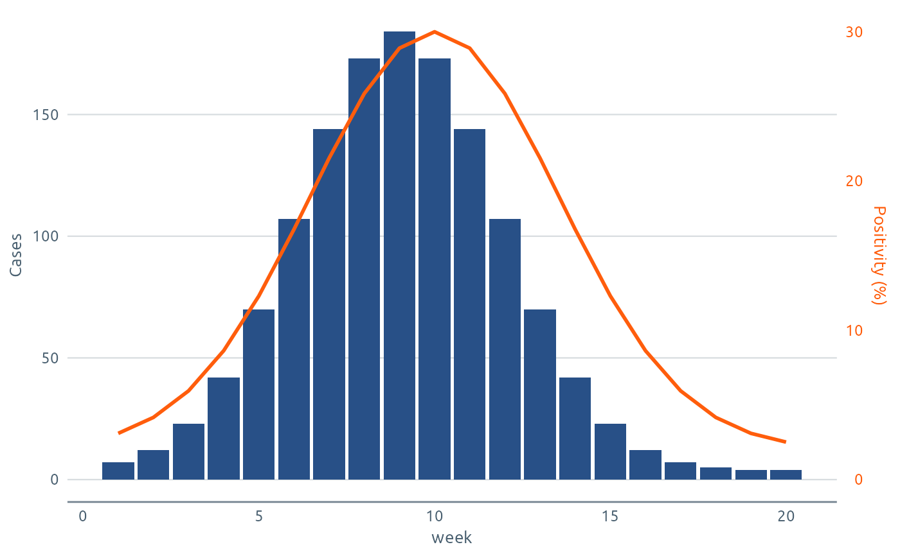
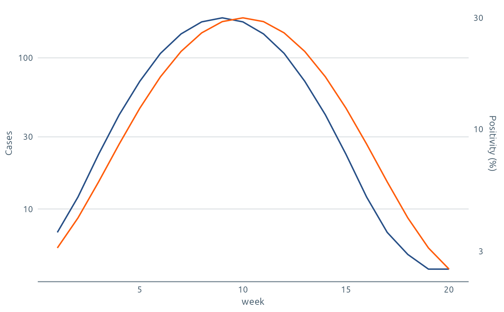

Draws a second measure against its own axis on the right (or top) of a
chart, for example a rate as a line over counts as columns. ggplot2 has
one scale per axis, so the second measure has to be rescaled into the
units of the first and the secondary axis has to undo that rescaling.
phw_sec_axis() works both out from the data, for linear and log axes,
so you don't have to find the multiplier by hand.
Arguments
- primary, secondary
The values on the main axis and on the secondary axis, or just the range of each as
c(min, max). For stacked columns give the range of the stack totals, e.g.c(0, 500).- name
Title of the secondary axis.
- scale
Scale of the main axis:
"linear"or"log".- sec_scale
Scale of the secondary axis. Defaults to
scale.- zero
Line up zero on both axes? This is the default for two linear axes, and what charts with columns need.
FALSEstretches the range ofsecondaryover the range ofprimaryinstead, which uses the whole panel. Log axes have no zero, so they always line up the two ranges.- breaks, labels, guide
Passed to
ggplot2::sec_axis(), e.g.labels = phw_percent().
Value
A secondary axis for the sec.axis argument of a continuous
position scale, with a $rescale() function that converts secondary
values to the main axis.
Details
It returns an ordinary ggplot2::sec_axis() with one extra function,
$rescale(). Use them together:
wrap the second measure in
$rescale()insideaes()give the object to
sec.axisin the scale for that axis
Set scale to match the scale you add it to: "linear" for
ggplot2::scale_y_continuous(), "log" for ggplot2::scale_y_log10().
On a log axis the two measures are lined up on the log scale, so both
axes show log-spaced breaks.
The secondary axis can also use a different scale from the main one.
scale = "linear", sec_scale = "log" puts a log axis on the right of a
linear chart, and scale = "log", sec_scale = "linear" does the reverse.
Two axes on one chart are easy to misread, because where the two series cross depends only on how the axes are lined up. Name both axes, and consider colouring the secondary axis to match its series (see the examples).
Examples
library(ggplot2)
d <- data.frame(week = 1:20)
d$cases <- round(180 * exp(-((d$week - 9) / 4)^2) + 4)
d$positivity <- 2 + 28 * exp(-((d$week - 10) / 5)^2)
# Linear: columns for counts, a line for the second measure.
sec <- phw_sec_axis(d$cases, d$positivity, name = "Positivity (%)")
ggplot(d, aes(week)) +
geom_col(aes(y = cases), fill = phw_col("navy")) +
geom_line(aes(y = sec$rescale(positivity)), colour = phw_col("orange"), linewidth = 1) +
scale_y_continuous("Cases", sec.axis = sec) +
theme_phw(axis.title.y.right = element_text(colour = phw_col("orange")),
axis.text.y.right = element_text(colour = phw_col("orange")))

# Log: the same idea on a log axis.
sec <- phw_sec_axis(d$cases, d$positivity, name = "Positivity (%)", scale = "log")
ggplot(d, aes(week)) +
geom_line(aes(y = cases), colour = phw_col("navy")) +
geom_line(aes(y = sec$rescale(positivity)), colour = phw_col("orange")) +
scale_y_log10("Cases", sec.axis = sec) +
theme_phw()
